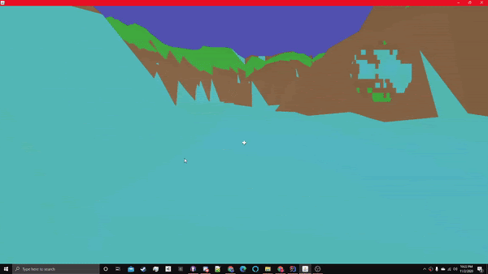
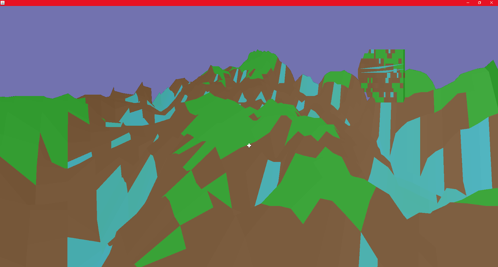

Jackson Clayton
Game Designer/Developer


Development timeline:
I started the project on Scratch at the beginning of my junior year of high school. That was where I made the code for rendering points on the screen. Eventually, I taught myself the graphics portion of Java and was able to convert all my code from scratch to Java (except keyboard input, which came much later).
After that, I spent most of my time and effort working on the world generation and adding elements to the engine like a very basic shader model for fog and moving waves in water and culling.
The world generation was took the largest amount of time, my process had multiple impulse points around the map that would create hills and bumps in the terrain.
Development focus:
During my junior and senior year of high school, I had a specific fascination with the basics of 3D engines and minecraft-esque open-world generation. I wanted to make my own 3D engine with as little code implemented from outside sources as possible. I created the rendering engine and scripts myself (the main script being taking in the x,y,z position of a point and returning the x and y positions of those points on the screen based on the position and rotation of the camera).
After that, I started working on the world generation. I made a very very simplistic noise generation process which was able to make the world generation smooth.